Gallery
Live examples, streamed on demand.
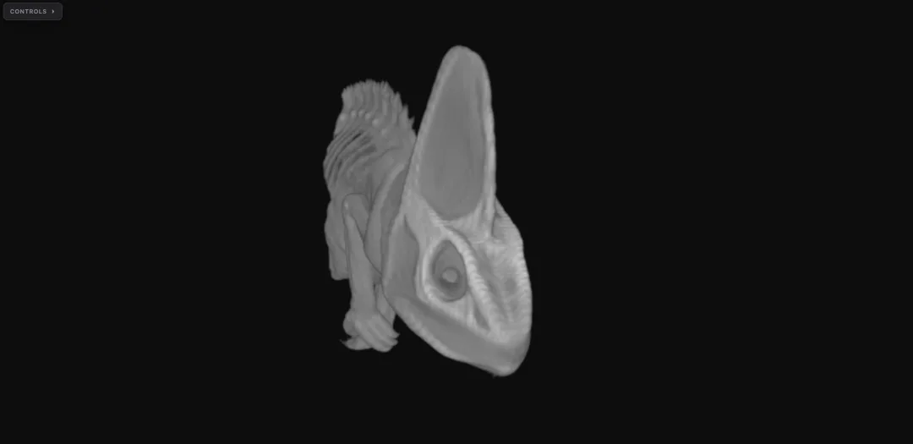
Veiled chameleon
CT scan of Chamaeleo calyptratus. DVR mode with a grayscale transfer function and window/level tuned for soft-tissue contrast.
Open SciVis — Chameleon ↗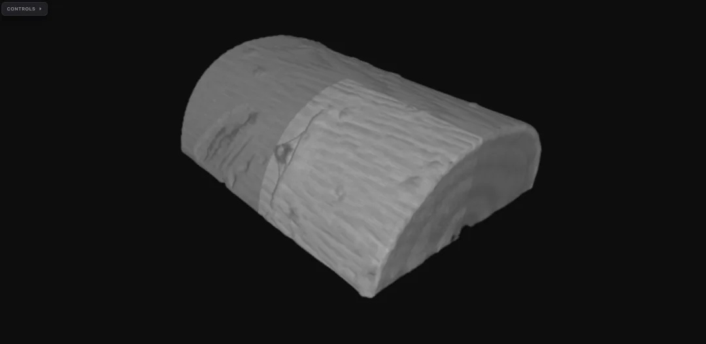
Woodbranch
Micro-CT of a wood branch, streamed directly from an OME-Zarr v0.5 store on S3. Shown in DVR mode.
Open SciVis Datasets ↗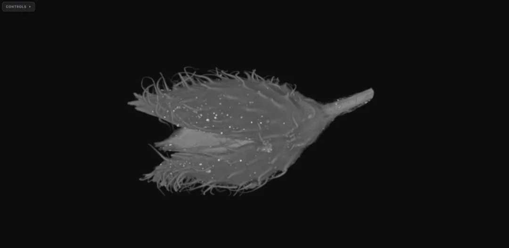
Beechnut
MicroCT of a dried beechnut, streamed from an OME-Zarr v0.5 store. Shown in DVR mode.
Open SciVis — Beechnut ↗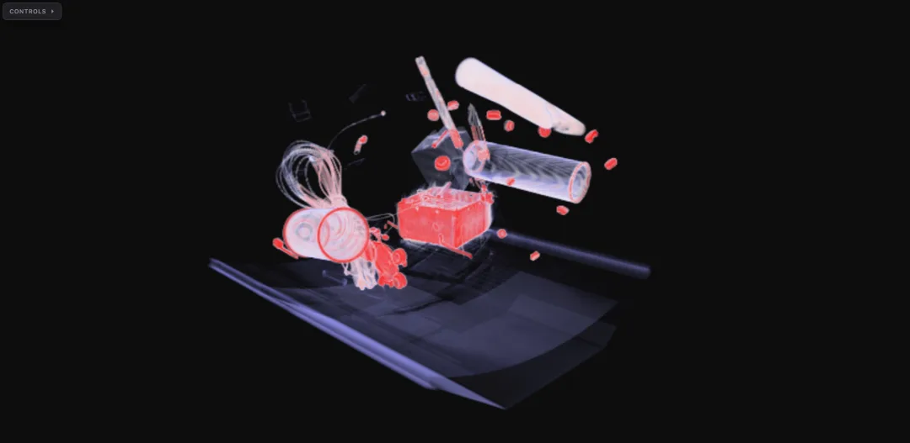
Backpack
CT scan from the Open SciVis collection, shown in DVR mode with a cool-warm transfer function.
Open SciVis Datasets ↗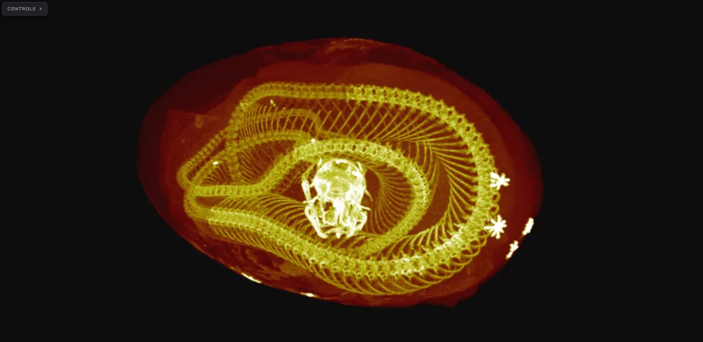
Kingsnake
CT scan from the Open SciVis collection, shown in MIP mode.
Open SciVis Datasets ↗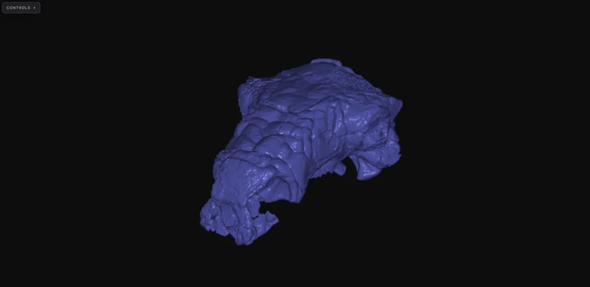
Pawpawsaurus
CT scan of a Pawpawsaurus skull from the Open SciVis collection, shown in isosurface mode.
Open SciVis Datasets ↗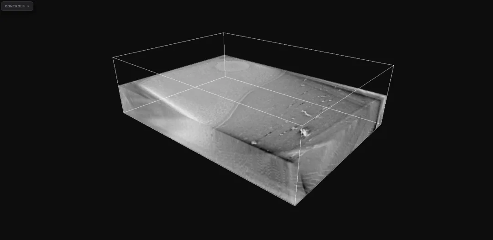
Vibrio cholerae
Cryo-ET tomogram from the CryoET Data Portal. DVR mode with an inverted grayscale transfer function and Z-axis clipping to isolate a region of interest.
CryoET Data Portal ↗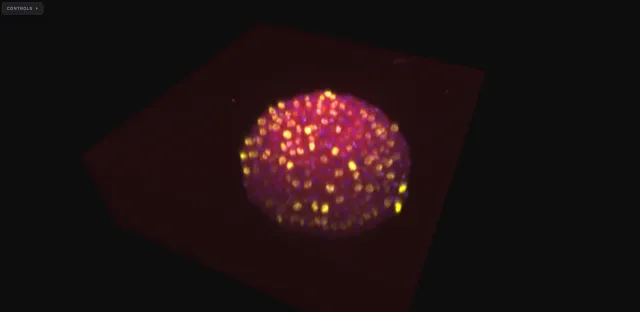
Zebrafish embryo · IM4
Four-channel fluorescence of a zebrafish embryo. Shown in MIP mode.
BioImage Archive · S-BSST410 (IM4) ↗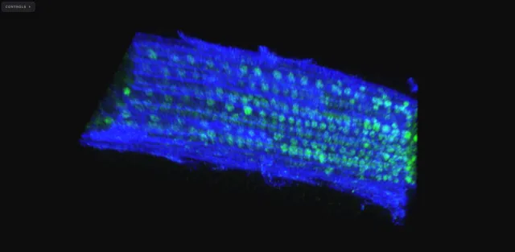
Arabidopsis FLC · IM500
Two-channel fluorescence from the Arabidopsis FLC gene-expression study (8-bit). Shown in MIP mode.
BioImage Archive · S-BIAD425 (IM500) ↗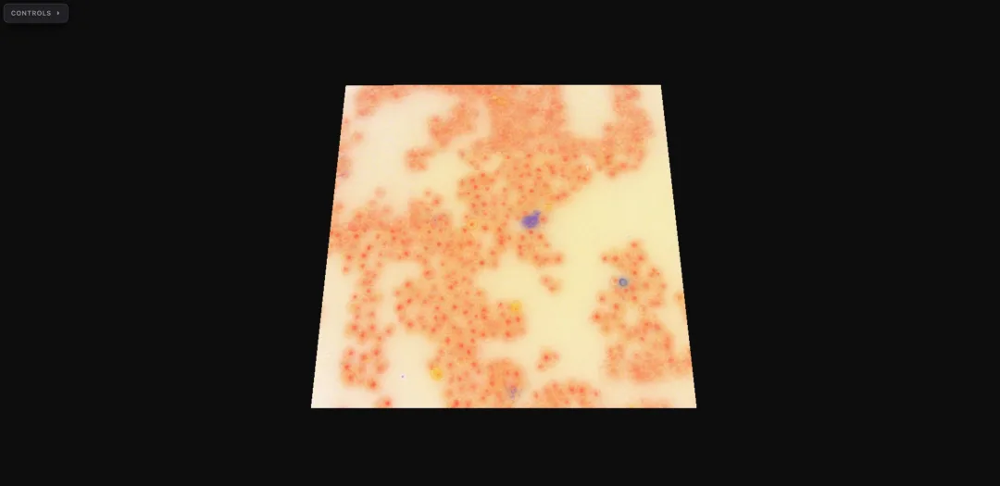
Yeast smFISH (IDR0047)
Single-molecule mRNA FISH in Saccharomyces cerevisiae. Channels: CY5, TMR, DAPI, and transmitted light. Shown in slice mode.
IDR0047 · Li & Neuert, 2019 ↗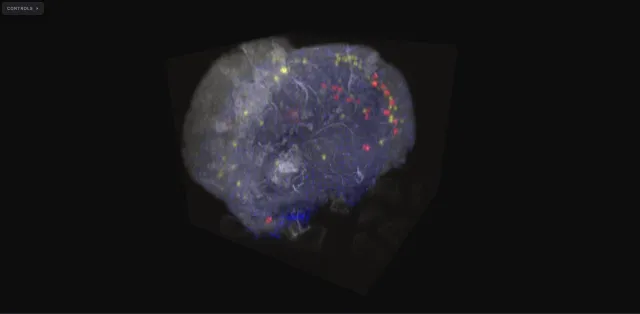
Drosophila brain (Fly-eFISH)
Drosophila brain multiplexed FISH (Fly-eFISH) — four fluorescence channels including AstA (546 nm) and CCHa1 (647 nm) markers. Large volume, shown in MIP mode. Note: this is a heavy dataset and may take longer to stream in.
Dataset credits
- Chameleon — CT scan of Chamaeleo calyptratus. Digital Morphology, 2003.
- Beechnut — MicroCT scan. Computer-Assisted Paleoanthropology group, University of Zurich.
- Stag Beetle — Industrial CT scan. Meister Eduard Gröller, Georg Glaeser, Johannes Kastner, 2005.
- Vibrio cholerae — Cryo-ET tomogram. CryoET Data Portal.
- IDR0079 — Zebrafish lateral line cellular architecture. Hartmann et al., 2020. Image Data Resource.
- IDR0047 — Yeast smFISH mRNA expression. Li & Neuert, 2019. Image Data Resource.
- S-BSST410 — Zebrafish embryo, axis specification. BioImage Archive.
- S-BIAD425 — Arabidopsis FLC gene expression (smFISH). BioImage Archive.
Single-channel datasets from the Open SciVis Datasets collection and the CryoET Data Portal. Multichannel datasets from the Image Data Resource and the EBI BioImage Archive.